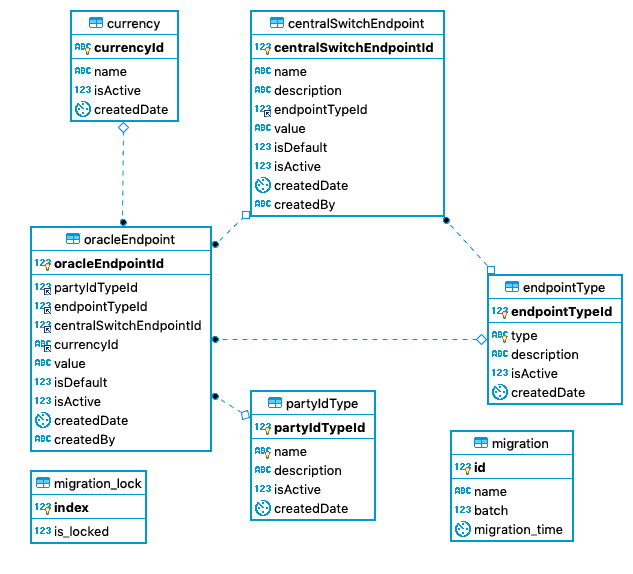

Account Lookup Service
The Account Lookup Service (ALS) (refer to section 6.2.1.2) as per the Mojaloop v1.0 Specification implements the following use-cases:
- Participant Look-up
- Party Look-up
- Manage Participants Registry information
- Adding Participant Registry information
- Deleting Participant Registry information
Use-cases that have been implemented over and above for Hub Operational use:
- Admin Operations
- Manage Oracle End-point Routing information
- Manage Switch End-point Routing information
1. Design Considerations
1.1. Account Lookup Service (ALS)
The ALS design provides a generic Central-Service component as part of the core Mojaloop. The purpose of this component is to provide routing and alignment to the Mojaloop API Specification. This component will support multiple Look-up registries (Oracles). This ALS will provide an Admin API to configure routing/config for each of the Oracles similiar to the Central-Service API for the End-point configuration for DFSP routing by the Notification-Handler (ML-API-Adapter Component). The ALS will in all intense purpose be a switch with a persistence store for the storage/management of the routing rules/config.
1.1.1. Assumptions
- The ALS design will only cater for a single switch for the time being.
- Support for multiple switches will utilise the same DNS resolution mechanism that is being developed for the Cross Border/Network design.
1.1.2. Routing
The routing configuration will be based on the following:
- PartyIdType - See section
7.5.6of the Mojaloop Specification - Currency - See section
7.5.5of the Mojaloop Specification. Currency code defined in ISO 4217 as three-letter alphabetic string. This will be optional, howeverisDefaultindicator must be set totrueif theCurrencyis not provided. - isDefault - Indicator that a specific Oracle is the default provider for a specific PartyIdType. Note that there can be many default Oracles, but there can only be a single Oracle default for a specific PartyIdType. The default Oracle for a specific PartyIdType will only be selected if the originating request does not include a Currency filter.
1.2. ALS Oracle
The ALS Oracle be implemented as either a Service or Adapter (semantic dependant on use - Mediation = Adapter, Service = Implementation) will provide a look-up registry component with similar functionality of the /participants Mojaloop API resources. It has however loosely based on the ML API specification as it's interface implements a sync pattern which reduces the correlation/persistence requirements of the Async Callback pattern implemented directly by the ML API Spec. This will provide all ALS Oracle Services/Adapters with a standard interface which will be mediated by the ALS based on its routing configuration.
This component (or back-end systems) will also be responsible for the persistence & defaulting of the Participant details.
2. Participant Lookup Design
2.1. Architecture overview

Note: The Participant Lookup use-case similarly applies to for a Payee Initiated use-case such as transactionRequests. The difference being that the Payee is the initiation in the above diagram.
2.2. Sequence diagrams
2.2.1. GET Participants
2.2.2. POST Participants
2.2.3. POST Participants (Batch)
2.2.4. DEL Participants
3. Party Lookup Design
3.1. Architecture overview

3.2. Sequence diagram
3.2.1. GET Parties
4. Database Design
4.1. ALS Database Schema
Notes
partyIdType- Values are currently seeded as per section7.5.6Mojaloop v1.0 Specification.currency- See section7.5.5of the Mojaloop Specification. Currency code defined in ISO 4217 as three-letter alphabetic string. This will be optional, and must provide a "default" config if no Currency is either provided or provide a default if the Currency is provided, but only the "default" End-point config exists.endPointType- Type identifier for the end-point (e.g.URL) which provides flexibility for future transport support.migration*- Meta-data tables used by Knex Framework engine.- A
centralSwitchEndpointmust be associated to theOracleEndpointby the Admin API upon insertion of a newOracleEndpointrecord. If thecentralSwitchEndpointis not provided as part of the API Request, then it must be defaulted.

5. ALS Oracle Design
Detail design for the Oracle is out of scope for this document. The Oracle design and implementation is specific to each Oracle's requirements.
5.1. API Specification
Refer to ALS Oracle API in the API Specifications section.